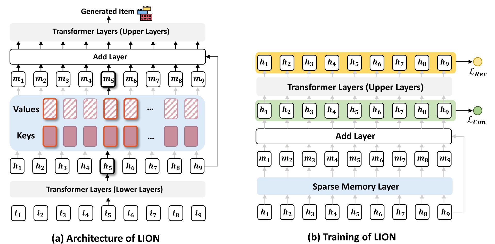
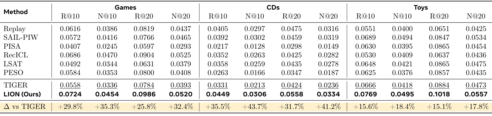
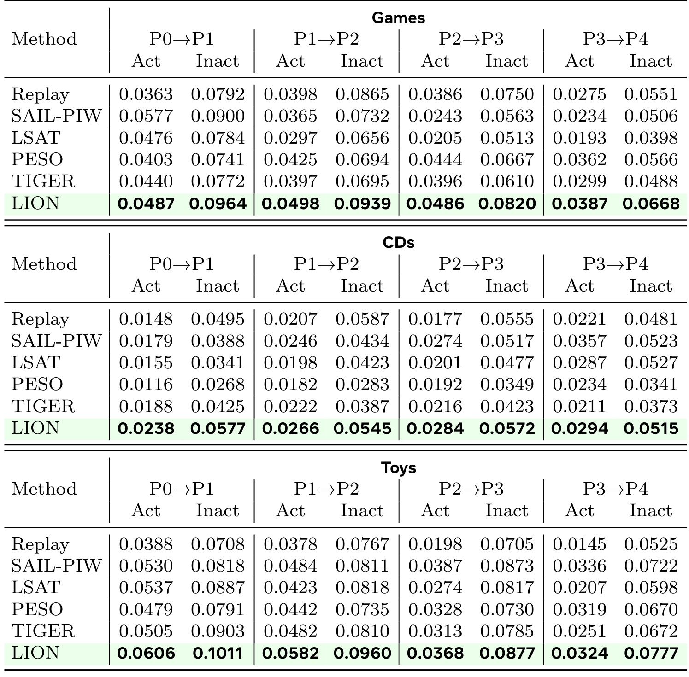
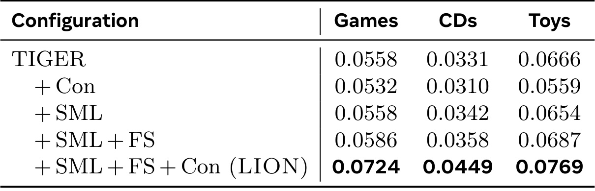
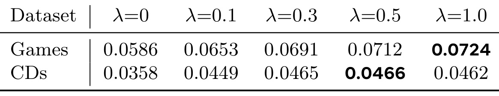
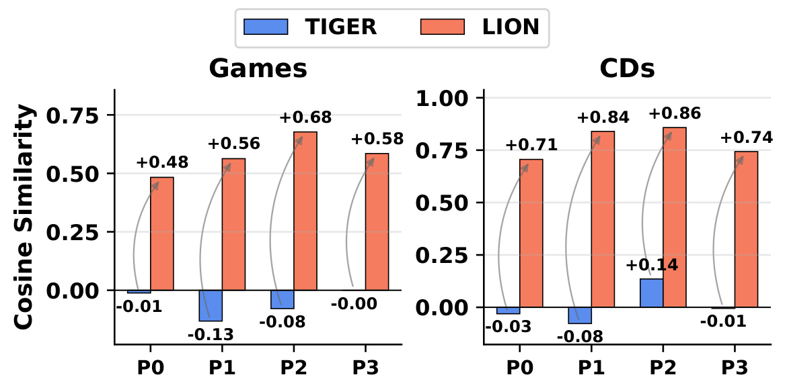
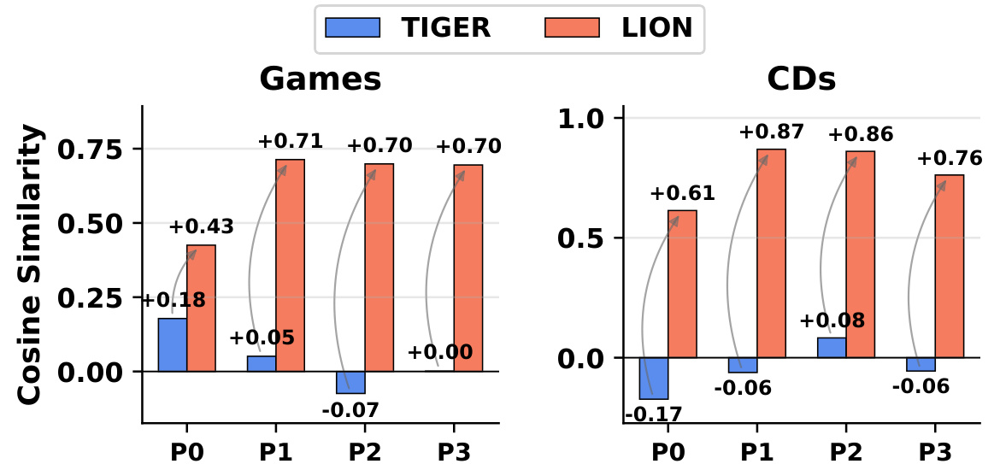
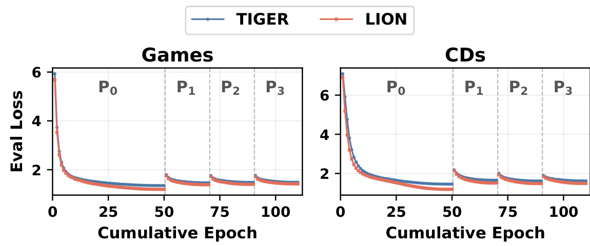
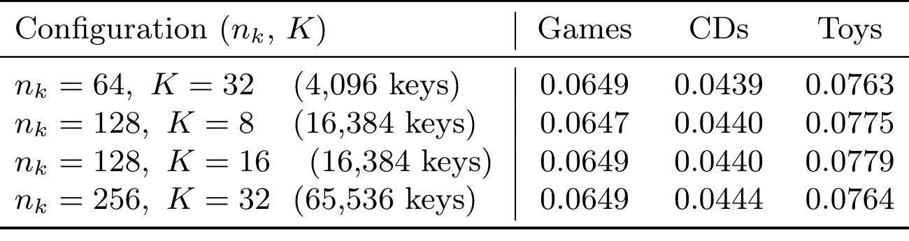

LION：生成式推荐中的自演化记忆
Self-Evolving Memory for Generative Recommendation（生成式推荐的自演化记忆）由 Xinyu Lin、Zhuosong Jiang 等研究者提出，一作主机构为新加坡国立大学，合作机构为 Meta AI。论文于 2026 年 9 月 14 日提交 arXiv，PDF 首页署日期为 9 月 15 日；本文依据 v1 原文、附录与已核验的官方实现说明阅读，记录日期为 2026 年 9 月 16 日。论文入口。官方代码 已公开，但 README 中的产品键记忆实现与正文抽象模型存在差异，不能据此声称已逐式复现。本文归入推荐算法方向，关注生成式推荐、持续学习和参数化记忆。
不同用户的异质偏好变化在完全共享的自回归参数空间内共同优化，主流行为模式逐渐支配模型演化，代表性不足的行为模式则越来越容易被忽视。
1. 背景和问题
1.1 从持续更新到演化冲突
生成式推荐把推荐目标写成物品标识符的生成问题：模型读取用户交互历史，再逐个生成代表下一个物品的离散标识 token。与先召回候选、再逐项打分的路径相比，这种设计把历史理解和输出生成集中到同一个自回归模型。共享参数使模型能从许多用户中学习可迁移的行为规律，但也意味着新的训练样本会共同改动这些参数。每天更新一次模型，表面上只是把训练数据窗口向前移动；实际上，不同用户的兴趣变化同时进入同一个优化空间，哪些变化有足够梯度影响力，便成为持续学习的核心问题。
LION 讨论的并非简单的“新知识覆盖旧知识”。假设某批用户最近都在关注一种热门游戏，他们贡献了大量方向相近的训练信号；另一批用户刚开始形成一种少见兴趣，样本较少，但变化同样真实。只按时间新旧划分数据，并不能把这两种新偏好区分开。即使它们都发生在今天，共享参数也可能为了拟合数量更多的群体而偏离另一群体需要的方向。论文把这种异质行为模式共同演化时的优化干扰称为演化冲突。这里“主流”和“少见”描述的是模式在训练数据中的代表性，并不是用户价值高低，也不意味着少见模式一定比主流模式更值得推荐。
论文首先把推荐损失拆成常见与不常见行为两部分，再考察各自梯度。当两个梯度内积为负时，一边的下降方向会增加另一边的损失；如果常见模式的梯度量级远大于少见模式，后者的更新影响力又会被压过。这是一个很有用的解释框架，但应把它理解为可能出现的机制，而非所有数据分布上必然发生的定理。样本数量多不自动推出聚合梯度范数更大，梯度相消、损失尺度、采样方式以及优化器都会改变结果。原文对量级不对称的描述，为提出结构化记忆提供动机；真正判断一个具体系统是否存在该问题，仍需要实际记录梯度和人群表现。
1.2 为什么重放和蒸馏还不够
持续微调只使用新到达数据，容易迅速吸收新兴趣，也可能损害旧模式。重放把部分历史数据再次加入训练，蒸馏则用历史模型提供约束，减缓模型偏离已有能力的速度。这些方法解决的是稳定性与适应性的平衡，主要问题是“新信息能改动多少”。LION 把关注点进一步移到“不同信息在哪里发生改动”。如果所有新旧信息仍然更新同一组共享参数，即使重新分配样本权重，冲突方向也可能继续存在。论文并没有证明重放、蒸馏或适配器无效；它的实验恰恰显示某些基线在具体指标、人群与时期仍然胜出，因此更合理的定位是提出一种补充的结构约束。
最直接的隔离办法是给每个用户一套独立参数。例如用户向量或用户专属适配器都能提供个性化通道，但用户数量增长时参数存储与维护成本也会增长。更重要的是，用户并不等于一个永久不变的兴趣类别：同一个人可能同时具有多个兴趣，不同人也可能共享某个行为子模式。LION 希望用共享的记忆槽组合来承载模式，通过查询动态选择其中一小部分。这样既允许复用，也避免所有模式每一步都访问全部记忆。它没有给每个用户分配一个绝对私有、永不冲突的空间，而是为模式提供更加稀疏、可区分的更新路径。
论文强调三个设计原则。隔离记忆要求不同模式尽量经过不同参数；强化演化要求弱势模式能够获得足够直接的训练信号；可扩展应用要求记忆规模不必随用户数线性增加。这三点相互制约：槽完全独立会损失共享收益，槽太少可能频繁碰撞，额外监督也可能把噪声放大。因此，一个稀疏模块是否有效，不能只看它有没有路由，还要看路由是否真正分化、辅助监督是否作用在正确表示上，以及完整训练程序是否改变了主干行为。后面的消融实验尤其重要，因为单独增加辅助损失会下降，单独增加稀疏层也几乎不提升。
1.3 记忆的含义与研究边界
本文的记忆是可训练的键值参数，并不是把用户历史原文存进向量数据库，也不是对话助手中由语言模型撰写的个人档案。它与 Transformer 推理时缓存注意力键值的 KV cache 也不同：后者通常为了避免重复计算，LION 的键值槽则直接参与预测和持续训练。虽然它使用完整历史来形成查询，但主要贡献并非“把更长历史塞进模型”，而是改变异质模式共享与更新参数的方式。阅读时把这几个概念分开，才能判断它与长序列压缩、外部检索、用户画像记忆的互补关系。
其任务采用时间切分：先在已有周期更新模型，再预测下一周期交互，不能让未来点击进入当前路由历史。论文实验来自三个 Amazon 品类，样本历史最多十次交互，因此文中“完整历史”应结合这一预处理上限理解，不能外推为真实平台上数万次行为的完整长序列。活跃程度是根据前一周期最大历史长度分组，少活跃组只是少见模式的一个代理指标，而非精确识别了所有稀有兴趣。冷启动用户、没有历史的新用户、物品标识随时间变化和真实业务曝光偏差，都没有在这组离线实验中被充分分离验证。
这篇论文值得深入阅读的地方，是把持续推荐的一个细粒度问题落实为可改造的网络模块与可观察的消融现象。同时，它的主干并未冻结，理论证明也有未充分说明的条件，正文与代码说明还有配置差异。因而最有价值的阅读方式是分清三个层次：作者提出了怎样的结构假设；离线表格和曲线支持哪些有限结论；距离真实工业部署仍缺哪些可复验细节。下面保留这些区分，不把经验上有效的组合直接上升为无条件保证。
2. 方法
2.1 稀疏记忆演化：把参数访问路径变成可学习变量
符号解释：用户历史为 $S_u$，下一个物品标识符为 $c_{i_{N+1}}$，长度为 $L$，$v_l$ 是第 $l$ 个标识 token，$\theta$ 为共享模型参数。训练用真实前缀预测后续 token，推理则使用模型已生成的前缀继续生成。一个物品对应多个标识 token，因此更新共享生成参数时，影响可能传播到多个物品所用的公共前缀，而不只作用于训练样本中出现的那个物品。这里的条件概率分解界定了问题对象，并未对标识符如何构造提出新方案。为说明共享更新的冲突，原文式（5）至（6）写成：
符号解释：这里 $c$ 与 $unc$ 分别表示常见、少见模式，$g$ 为对应梯度，$\eta$ 为学习率；最后一个不等式是冲突情形的条件，不是一般更新总会满足的事实。LION 为这类更新引入额外可路由参数。记忆由 $N$ 个键值对组成，每个键和值都是 $d$ 维向量，原文式（7）至（8）可合并表示为：
符号解释：$h_u$ 是用户查询表示，$s_i$ 为与第 $i$ 个键的匹配分数，$\mathcal A_u$ 是激活槽索引集合。查询先决定访问哪些记忆，再聚合对应值。在候选槽选择固定的局部计算中，未被激活的值不参与该样本的记忆输出；被选中槽则由权重决定贡献。硬 Top-K 的成员切换具有离散性，原文抽象并没有给出对选择边界进行连续优化的额外算法，不能默认使用了可微排序近似。原文式（9）至（10）为：
符号解释：$\alpha_i$ 为激活槽的缩放权重，$m_u$ 为聚合记忆，$\widetilde h_u$ 为残差相加后的隐藏表示。稀疏性发生在记忆槽的访问与更新支持集上；选择出的值通过残差加入隐藏表示，再交给后续 Transformer 层。上述权重是 min-max 归一化，绝不是 softmax：权重总和不一定为一，最小分数对应权重为零，残差幅度因此可能随激活集合变化。若选中分数完全相同，分母为零；原文没有在该公式注明数值稳定项。复现时要核对实现使用的归一化与异常处理，而不能自行加上 softmax 后仍称逐式复现。

Figure 3 的左面板从底部交互输入向上阅读：低层 Transformer 提供表示，键负责选择记忆槽，值承载可训练内容，聚合结果加回隐藏状态，最后由上层网络生成物品。图中并非所有槽都有同等激活强度，这对应“共享一个记忆库，但每次仅访问子集”的设计。它与给每位用户固定独立向量有本质差异：一个槽可以被不同用户复用，一个用户也可以随上下文选择不同槽组合。这样的结构允许形成行为子模式，但不能仅凭图中的不同颜色判断实际路由已互不重叠。右面板把主推荐损失放在最终预测处，把 consolidation 损失放在记忆增强表示附近，强调辅助监督缩短了记忆表示到训练目标的路径。两面板合看，才是本文完整机制；只实现左面板而没有有效训练信号，并不一定得到论文增益。
图里的残差相加也解释了为什么不能把 LION 称为完全隔离模型。不同用户仍然共用记忆之前和之后的 Transformer，主干梯度仍可能发生相互影响；只有某些记忆值参数的梯度支持集会因路由而分开。共享上层又是有意保留的，它让不同模式使用相同生成能力，而不是为每个模式重新训练一个推荐器。工程上需要同时观察记忆槽、路由键和主干三个位置，才能判断收益来自更好的模式分工，还是来自额外容量、辅助目标或训练程序改变。图示提供了这些观察位置，但并没有替代真实梯度和参数量测量。
在历史处理上，论文另设完整序列查询：记忆查询来自用户完整行为上下文，而主干相关计算使用近期子序列，近期长度由 $h_{rec}$ 控制。这种非对称输入希望同时利用较稳定的全局模式和最新兴趣。不过，原文既说低层输出用于查询，又说记忆前后的 Transformer 操作在短序列上，完整历史究竟在何处编码，需要结合实际实现确定。官方 README 提供早层使用完整历史、晚层聚焦最近两次交互的描述，因此应将论文抽象接口与具体计算图分别记录，不能把全历史查询理解成完全免费的一次向量读取。
2.2 强化演化：在记忆增强表示上直接预测
LION 保留标准自回归推荐损失，同时对记忆增强表示提供 consolidation 辅助监督。按原文式（11）至（13），两个预测目标与总目标为：
符号解释：$i_{t+1}$ 为预测目标，$\widetilde h_u$ 是记忆增强表示，$\lambda$ 控制辅助监督强度。这里沿用论文简写，标识 token 与物品序列的求和索引在原文不同公式中有混用，实际训练必须以数据构造及预测头定义为准。主损失经过完整生成网络，辅助损失直接要求中间表示能够解释后续物品。作者的直觉是，少见模式经由最终推荐目标回传的信号可能太弱，额外路径能让其记忆更容易形成。
需要注意，公式本身没有按用户活跃度显式加权，也没有给每个长尾样本乘更大系数。“强化少见模式”是稀疏结构与直接监督共同作用的设计意图，不是损失中已经编码的群体保证。辅助损失作用在仍然高度共享的表示上时，可能再次放大群体冲突；因此消融中单独加 Con 的下降，不是可忽略的异常，而是机制论证的重要部分。训练时需要两个监督分支；论文的收敛评估仅比较主语言模型损失，避免把额外训练项当作推理质量变化。
2.3 实例化：共同微调与公开实现的差异
正文第 4.1.3 节明确：每个时期到达新交互后，主干和记忆参数一起持续微调，再把更新后的模型用于下一时期的自回归推荐。第 5.1.4 节也说明，除特别声明外更新所有参数。因此不能把方法介绍成冻结大模型、只训练外部记忆，更不能据此承诺主干知识不会被覆盖。记忆层插在 Transformer 中间位置，改变的是可用参数通道以及表示上的训练信号，并没有取消主干优化。
已核验的官方 README 则使用 T5 decoder 的 L3 产品键记忆（PKM）替换 FFN，描述早层全历史与晚层 recent-2 的分工，并设辅助预测头。其预热安排是先冻结 PKM、训练主干十个 epoch，随后进入相应训练阶段。这与“冻结主干学习记忆”方向相反。论文附录又将共享默认位置写为 layer 5。正文的独立键值残差抽象、README 的 PKM 替换模块、附录的层位置，不能未经核对就合并为同一个精确配置。代码已公开是复现入口可用的证据，不是实现与所有表格已经一致的证明。
2.4 理论分析：支持集结论与量化保证分开看
令常见、少见模式激活集合为 $\mathcal A_c$、$\mathcal A_{unc}$，均有 $K$ 个槽，交集为 $\mathcal O$。原文式（14）至（15）给出：
符号解释：这里 $g_i^c$ 表示对应群体对记忆值 $v_i$ 的梯度。前一个支持集结论有清楚的结构依据：交集之外的槽至多收到一个群体的梯度，不会产生该槽上的双边负内积。但最后一个量界需要额外条件。即使交集只有一个槽，该槽也可能承载几乎全部负内积冲突；只知道槽数量占比，不能推出冲突强度同比下降。原文基线先按全部 $N$ 槽定义，证明文字又用 $K$ 个激活方向比较，基准也需澄清。本文保留作者结论并标明其推导边界，不将其当作无条件已证实的比例定理。
符号解释：$\sigma_0^2$ 是随机噪声方差，$\sigma_c^2$ 是加入跨模式干扰的有效方差，$g_{\bar c}$ 为其他模式的聚合梯度，$\beta$ 表示干扰强度。这是用于解释优化的噪声模型，交集占比对干扰方差的线性缩放本身是一项建模假设。将其代入光滑非凸优化的 SGD 界，原文式（18）得到：
符号解释：$T$ 为步数，$L$ 为光滑常数，$\mathcal L_c^*$ 为参考最优值。噪声项更小可以改善这类上界，但还取决于步长、初始差距以及上述噪声关系是否成立。它不是基于真实训练曲线得到的固定加速倍率，更不能直接换算成 GPU 小时下降。
符号解释：$N$ 是槽总数，$K$ 是每次激活槽数，$d$ 是单个向量维度，$|\mathcal U|$ 是用户数。与每位用户一个 $d$ 维参数相比，固定槽库在用户数足够大时有容量优势。但组合数量多，仅表示可选择的索引集合多，不保证训练会使用全部组合、不保证每位用户获得唯一表示，更不意味着不同组合之间没有共享槽。实际 PKM 参数化也不同于简单逐个保存独立键和值的预算。路由专门化及重叠降低在本文属于经验趋势，作者亦承认其依赖数据和优化，不应在总结中改写成训练必然让重叠趋零。
3. 实验结果
3.1 数据、时期与统计口径
论文使用 Amazon Review 的 Games、CDs、Toys。附录 Table 6 给出 Games 为 34,089 位用户、11,037 件物品、252,015 次交互；CDs 为 21,347 位用户、14,239 件物品、185,855 次交互；Toys 为 22,158 位用户、11,250 件物品、140,943 次交互。构造下一物品预测样本时，输入最多包含十次先前交互。所有样本按目标交互时间排序，等交互量分成 P0 至 P4 五段，再沿时间链更新与评估。这样的切分检验时间漂移，不能等同于在线系统中每天固定时长的自然流量波动，因为每段时间跨度可能不同。
每一时期又根据前一时期最大历史长度将用户分为 G1 至 G5，活跃度从高到低，P0 则用当期活跃度。G1、G2 合为活跃组，G3 至 G5 合为非活跃组。主表汇总四个评估时期乘五个人群单元，采用按样本加权的微平均，不是让每个人群和每个时期各占相等权重。因而主表仍可能被样本多的群体影响，必须结合分组表阅读。生成时 beam size 为二十，报告 Recall 与 NDCG 在十和二十两个截断位置的结果；Recall 表示目标是否进入生成列表，NDCG 还考虑命中位置。
所有方法统一落在 TIGER 的 T5 骨架上。TIGER 用当期数据持续微调；Replay 每期采样与新数据等量的历史实例；SAIL-PIW、PISA 处理稳定性和适应性；RecICL 引入上下文样例；LSAT 与 PESO 采用相应适配思想。把方法迁移到统一主干有利于比较，但不等于重现它们原论文最佳系统，尤其原本面向不同模型规模的方案可能在迁移中受影响。实验采用随机种子四十二，论文未展示多种子均值和置信区间，因而非常接近的指标不能据表格末位差距断言显著优胜。
3.2 主结果与分组表现

Table 1 中，LION 的 Games Recall@10 为 0.0724，TIGER 为 0.0558，绝对差为 0.0166，即 1.66 个百分点，相对提高约 29.8%；CDs 为 0.0449 对 0.0331，相对提高约 35.5%；Toys 为 0.0769 对 0.0666，相对提高约 15.6%。这些是对直接持续微调基线的提升，不能在不注明基准时统称相对最强方法提升。比如 Games 的 RecICL Recall@10 达到 0.0686，LION 相对它的差距明显小于对 TIGER 的差距。表格最下方黄色一行明确写的是对 TIGER，阅读和转述都应保留这个限定。
更有信息量的反例是 Games 的 NDCG@10：LION 为 0.0454，低于 RecICL 的 0.0470；NDCG@20 也以 0.0520 略低于 RecICL 的 0.0525。这说明找回更多目标物品与把目标排得更靠前并不完全一致，记忆结构可以提高命中覆盖，同时仍在前部排序质量上输给某个基线。CDs 与 Toys 的多项指标表现较好，但 Toys 的 NDCG@10 为 0.0495，与 SAIL-PIW 的 0.0494 差距只有 0.0001；缺少方差时，这种微小优势不宜重点放大。主表支持的是总体有效且多数条件有竞争力，不支持所有数据集、所有指标都最佳。
还需要区分样本加权微平均和用户公平性。主表的提升可能来自不同分组的组合，有些用户获得很大改善，有些用户变化很小；没有分组数据就不能断言均衡受益。同时，表格里的三个品类规模在数十万交互以内，不含线上转化、点击收入或大规模服务指标。这里的百分比是离线排名统计的相对变化，无法直接映射业务收益。论文贡献的可信部分是相同持续学习评测链下的比较，后续迁移到工业链路仍需单独设计验证。
表中不同方法对历史数据的使用也并不完全相同，例如 Replay 额外采样历史实例，所以这里统一的是任务与主干，而不是完全相等的训练样本读取量。结果比较有研究意义，但若要评估单位计算预算的收益，还需要将重放数据读取、训练步数及新增模块成本列为独立维度。

Table 2 将总体结果展开到每一段时间及两类用户，可以检查“少见模式不再被压过”的主张。Games 的非活跃组中，LION 四次分别达到 0.0964、0.0939、0.0820、0.0668，都高于对应 TIGER 的 0.0772、0.0695、0.0610、0.0488，说明这一人群的改善没有只集中在第一次更新。Toys 非活跃组也由 TIGER 的 0.0903、0.0810、0.0785、0.0672 改善至 0.1011、0.0960、0.0877、0.0777。这些数值为持续受益提供了比主表更具体的证据，但曲线整体仍可能随时期下降，不能将“相对基线持续更好”说成绝对效果随训练持续增长。
对所有竞争方法逐格检查，则不能照搬原文“每个时期都稳定领先”的宽泛措辞。Games 第一次活跃组 LION 为 0.0487，低于 SAIL-PIW 的 0.0577；Games 最后一次活跃组也低于 Replay 的 0.0398。CDs 最后一期活跃组 LION 为 0.0294，低于 SAIL-PIW 的 0.0357；同一时期非活跃组 0.0515，也低于 LSAT 的 0.0527。Toys 后两个时期活跃组分别为 0.0368、0.0324，低于 SAIL-PIW 的 0.0387、0.0336。因此较准确的结论是：相对 TIGER 的逐期表现稳定改善，而相对不同竞争方法的优势仍依数据与群体变化。
非活跃组的 Recall 数值普遍高于活跃组，不应反向解释为非活跃用户更容易服务或没有稀疏问题。活跃度按历史长度定义，与候选难度、兴趣跨度和重复消费倾向并不是同一个变量。少交互用户可能预测目标更集中，多交互用户可能兴趣更广，使跨组绝对数值不可直接当作公平性分数。真正有用的是固定同一时期、同一组，比较不同方法，并观察相对改善是否持续。若要验证稀有兴趣是否得到保护，还需按兴趣模式频率、物品长尾程度和新兴趣发生时间追加切片。
在跨时期比较中还应注意，人群划分依据前一时期历史，个体可能随时间换组，因此不能把四列看成一组固定用户的纵向追踪。当前表支持的是每个时期按同一规则定义的人群受益状况，而非证明同一批非活跃用户持续改善。若研究长期个体体验，需要额外维护固定用户队列，对兴趣变化和分组迁移分别分析。
3.3 消融与监督强度

Table 3 是本文最能说明机制约束的一张表。仅加 Con 时，Games 从 TIGER 的 0.0558 降至 0.0532，CDs 从 0.0331 降至 0.0310，Toys 从 0.0666 降至 0.0559。额外监督并没有自然带来更好表示，尤其 Toys 下降明显。作者解释为辅助目标仍然作用在共享表示上，继续暴露于跨模式冲突；这是合理的机制解释，但表格只能确定单加该模块会下降，不能完全排除损失权重、预测头配置或优化强度差异带来的原因。复现时应记录梯度范数和训练步数，才能更细地拆分这些因素。
仅加 SML，Games 保持 0.0558，CDs 小幅升至 0.0342，Toys 降至 0.0654，因此稀疏层本身也不是充分条件。加上全序列查询 FS 后，三个数据集分别达到 0.0586、0.0358、0.0687，有改善但幅度仍有限。最后再加 Con 才达到 0.0724、0.0449、0.0769。这个顺序支持结构与监督互补：查询为路由提供更完整的模式信息，辅助目标推动增强表示具备预测力，二者合起来比单独增加一层记忆更有用。它也意味着实际移植时若只插入参数模块、不保留相应训练链，未必能复现论文结果。
表格并不是全部模块的完整析因实验。例如没有单列固定路由对照、等参数量稠密层对照或把额外监督施加在不同层的对照，因此还不能唯一归因“提升全来自减少冲突”。额外容量、历史输入路径和辅助预测深度也有可能贡献效果。原文 Figure 4 对 Games 与 CDs 的人群轨迹做了补充，完整 LION 在对应 TIGER 轨迹上方，但该图不提供比主表更广的人群保证。对工程研究而言，最稳妥的下一步是先保持这些消融关系，再测实际路由重叠和槽利用率，而非把单次最优结果作为模块可即插即用的证据。
该表采用逐步加入模块的路径，最后一步的增量只能解释为在已有 SML 与 FS 条件下加入 Con 的条件效果。它不能直接与单独加入 Con 的差值相加，也不能将最后一步全部归为稀疏层的独立贡献；非线性模块之间的交互正是这里需要保留的信息。

Table 4 进一步说明辅助监督的强度需要按数据集确定。Games 在权重从零增加到 0.1、0.3、0.5、一时，Recall@10 依次为 0.0586、0.0653、0.0691、0.0712、0.0724，显示这一测试范围内持续改善。CDs 则从 0.0358 跳到 0.0449，之后在 0.3 和 0.5 时达到 0.0465、0.0466，在一时回到 0.0462。它支持“非零辅助监督有帮助”，但不支持越强越好，两个品类的最优权重不同。作者据此建议通过验证集选择参数，不能把 Games 的最佳值直接迁移为全局默认。
这里还暴露了报告配置需要核验的地方：主表 CDs 的 LION 是 0.0449，与该表权重 0.1 的结果相同，却低于敏感性表中 0.5 对应的 0.0466。原文又说每个数据集通过验证选择最优权重，读者自然会想知道为何主表没有使用更高数值。可能涉及不同实验批次或其他设置，但 PDF 没有给足证据，本文不替作者解释。应把主表和敏感性表各自按原值记录，不能把后者更好的值悄悄替换到主表，或由此重新计算“主结果提升”。
此外，权重变化可能同时改变辅助梯度相对于主梯度的尺度。即使两个数据集使用同一数值，实际作用强度仍会因损失分布而不同。因此，验证集选参时应同时记录主损失、辅助损失及梯度范数，区分过强辅助监督和主目标收敛不足。当前表没有给出这些动态信息，也没有多次运行的离散程度，不能把 0.0466 与 0.0465 的差别解释为稳定排序。作为复现策略，可以先检验是否存在一个较宽的有效权重区域，再决定是否值得针对极小末位差异继续搜索；这是基于表格提出的验证顺序，不是作者报告的新实验。表中也没有 Toys 的权重扫描，因此不能根据另外两个品类的平稳区间，声称第三个品类同样不敏感。
3.4 梯度与收敛证据

Figure 5 在 Games 和 CDs 的各时期比较活跃与非活跃用户的聚合梯度余弦。Games 的 TIGER 为约 −0.01、−0.13、−0.08、接近零，LION 为 0.48、0.56、0.68、0.58；CDs 的 LION 为 0.71、0.84、0.86、0.74，整体明显更正。这支持两组聚合更新方向在所测检查点上更兼容。它不是直接显示每位少活跃用户都免受干扰，更不是展示激活槽交集数量随训练下降的曲线。原文将其与路由专门化相联系，属于机制解释而非该图直接测量出的路由事实。
一个关键数学区分是，聚合梯度的总内积为正，并不等于每个槽上的内积都非负。若某些槽有较大正内积、另一些槽有负内积，总和依然可能为正，而论文冲突量先对每个槽取负部再求和，仍可能大于零。因此不能依据橙色柱全部高于零，就断言式（14）的冲突严格归零。此外，图注称在稀疏记忆层测量，却包含没有该层的 TIGER；不同模型具体选取哪些对应参数计算余弦，正文解释不够细，需要实现核验。本文将图视为有价值的方向兼容性观察，保留测量位置与统计对象的不确定性。
余弦还消除了梯度范数信息：两个很小的梯度可以高度同向，却未必对训练有实质作用；一个少见模式的梯度即使方向变得兼容，量级仍可能不足。要把该图与“代表性不足得到强化”连接起来，至少要同时测量分组梯度范数与每组损失下降，并明确是对全部记忆值展平计算，还是先算各槽再平均。也应报告采样数量、批次组成与检查点选择，因为两个群体使用不同批量大小会影响聚合方向的稳定性。当前图没有这些细节，因此它适合作为后续机制复核的起点，不能独自承担全部因果解释。

Figure 6 将同一观察扩展到商品侧，用 P0 的交互次数定义流行度，区分 top 60% 与 tail 40% 商品组，避免每期重新定义组而失去可比性。Games 的 LION 余弦约为 0.43、0.71、0.70、0.70；CDs 为 0.61、0.87、0.86、0.76。相应 TIGER 在部分时期呈负值，例如 CDs 首期 −0.17，说明用户分组之外也能观察到不同模式方向的变化。这个结果有助于排除“现象完全来自活跃用户分组方式”的单一解释，但仍然是聚合梯度指标。
商品长尾与稀有用户兴趣有相关性，却不是同一个标签：热门商品也可能发生稀有使用场景，长尾商品也可能具有高度一致的集中受众。图中没有直接报告长尾物品 Recall、覆盖率或曝光变化，所以不能转述为长尾商品推荐质量已经获得某个百分比提升。按 P0 固定流行度分组还能形成另一边界：后来突然变热门的新商品，其所属组与当前流行度可能分离。若把此方法用于快速变化的内容平台，需要同时保留固定组追踪与滚动流行度分组，才能判断梯度兼容性与实际分发收益的联系。
流行度比例的解释也需要谨慎：这里按原文所述用商品交互统计定义两组，并非宣称尾部组恰好占四成流量。若将其转成分发策略，商品数占比、交互量占比和曝光占比必须分别报告。尤其热门组内部仍有显著头部差异，单一聚合向量可能掩盖组内冲突。复核时可以增加不同分位边界，比较相同商品队列在多时期的梯度方向与命中质量，避免某个分组阈值偶然放大现象。同时保持 P0 统计的时间边界，不能用完整数据集的未来流行度重新定义初始组，防止评估信息泄漏。

Figure 7 比较 Games 与 CDs 上的主语言模型评估损失，横轴为累计 epoch，虚线划分 P0 至 P3，红线表示 LION。新时期开始时两条曲线都有跃升，随后重新下降，符合输入分布随时间移动时旧模型暂时不适配的现象。LION 在图中下降更快，最终损失也较低，说明收益不只是最初训练一次带来的静态优势。作者专门使用纯主损失而非包含 Con 的总训练损失，避免不同目标项造成数值不可比，这一点让曲线的解释更加清楚。
不过，“较少 epoch 达到较低损失”与“实际训练更省时”之间仍有计算开销差距。额外路由、辅助预测头和历史处理可能增加单步成本；该图没有报告每步耗时、GPU 型号、峰值显存、训练吞吐或生成延迟，也没有把早停次数的差异换算成统一计算预算。图中低损失还需要与 Recall、NDCG 一起看，不能用它替代推荐指标。最合理的结论是该实现表现出更好的优化进度，而非已经证实工业训练成本下降，更不能拿理论式（19）的方差比充当端到端加速倍率。
从实验设计看，这条曲线仍有很好的诊断用途。如果复现时新周期开始后损失跳升更剧烈，可能是路由对历史分布过度固化；如果辅助目标下降、主损失不降，可能是记忆增强表示学会了训练捷径。记录每期恢复所需步数、主损失和分组 Recall，可以区分“更快适应新数据”与“只优化了辅助头”。这些是依据曲线提出的后续测量方案，不是作者已经报告的额外实验结果。
由于横轴是累计 epoch，不同周期的样本数和早停行为也要一起记录。即便这里采用等交互量时期，重放基线额外读取历史样本的成本仍不能由横轴直接表达；统一训练步数或已处理 token 数会更适合做计算效率对照。
3.5 容量与超参数：哪些结论尚未闭合

Table 5 使用产品键形式的配置，记忆词表大小为每维键数的平方。每维键数从六十四增至二百五十六，对应总键数从 4,096 增至 65,536，相差十六倍；Top-K 在八、十六、三十二等值间变化。Games 的 Recall@10 在 0.0647 至 0.0649，CDs 在 0.0439 至 0.0444，Toys 在 0.0763 至 0.0779，说明这几种容量设置下效果差距较小。尤其 Games 大幅加槽没有明显收益，提示该数据规模可能尚未触及表示容量瓶颈，或其他模块已成为主导限制。
但这里应精确解释原文“变化在 ±0.4% 内”的说法。Toys 全范围差为 0.0016，也就是 0.16 个百分点，若相对最小值计算约为 2.1%，不能把它读成相对波动始终低于 0.4%。更大的配置也不是一定最好：Toys 在每维一百二十八、Top-K 十六时达到 0.0779，高于最大词表配置的 0.0764。这说明选择槽数要结合优化和共享程度，而不是仅按组合数量多寡推导最优。表格测量的是容量敏感性，不是延迟或显存；其参数开销优势仍需真实实现统计。
更重要的是，Games 在此表的小槽配置为 0.0649，而主表完整 LION 为 0.0724。附录称共享默认每维六十四、Top-K 三十二，这与该行相符，但效果不相同。该差异说明不同表格可能使用了不同权重、层位置或运行配置，PDF 没有充分统一交代。在未核验实验脚本之前，不能把主表的最佳效果、附录默认配置以及本表最小容量直接拼成同一系统，宣称“最小配置完全保持全部主表增益”。这也是代码复现最先应该解决的问题之一。
附录 Table 7 的近期长度扫描中，Games 从长度二的 0.0653 逐步降到长度八的 0.0632，CDs 从 0.0449 降到 0.0402，Toys 从 0.0769 降到 0.0730，支持短近期窗口在该配置下较合适。它不等于长历史没有价值，因为完整历史查询与近期主干窗口承担不同角色。附录文字却把趋势解释成“路由近期交互最有信息”，与正文完整历史路由的表述需要再核对。Table 8 中 layer 0 的表现明显下降，例如 Games 为 0.0261，说明没有足够上下文的表示可能不适合路由；layer 5 分别达到 0.0688、0.0784、0.0467，也再次与若干主表数值不同。本文保留这些差异，不通过挑选最好数字消除原文配置不透明的问题。
4. 总结
LION 最清楚的贡献，是把生成式推荐持续更新中的问题从“新旧知识要如何加权”扩展到“不同模式通过哪些参数演化”。稀疏记忆槽提供局部区分的通道，完整历史查询帮助识别行为模式，直接辅助监督推动记忆增强表示承担预测任务。消融显示三者需要配合，单加损失或单加稀疏层都不足以得到完整收益。这一发现对研究者很实用：应该评估完整结构和优化程序，而不是只把记忆模块当作增加参数量的插件。
对推荐工程，最值得迁移的是诊断框架。持续更新后，除了整体 Recall 和损失，应检查同一时期各人群的增益、热门与长尾商品的差异，以及不同群体在具体参数位置上的梯度兼容性。若只看到平均指标变好，可能遗漏某些偏好正在失去影响力。对个性化大模型，本文则提示参数化记忆能够用于分配优化路径，而不只是保存更多可检索文本。但将这一思想迁移到对话偏好、长期助手或更大语言模型，仍是研究推论；论文当前并未验证这些任务。
4.1 局限与风险
- 理论量界的条件不足。 交集外记忆值不发生双边冲突有结构依据，冲突强度按重叠率缩放却需要额外梯度条件。主干共同微调又保留共享干扰，不能将局部记忆结论提升为整体模型保证。聚合余弦为正也不能证明逐槽负内积全部消失。
- 配置与实现对应关系不完整。 正文残差键值层、README 的 PKM 替换 FFN、预热阶段和附录默认层数存在差异；多个表格的同名配置数值并不一致。若不先明确版本与配置，复现偏差可能被错误归因到随机种子或数据处理。
- 评估范围有限。 三个 Amazon 品类、最多十次输入历史以及四段离线未来评估，尚不足以覆盖超长序列、新用户、极速内容更新或工业多目标推荐。没有线上 A/B 实验，也没有真实服务延迟和吞吐测量。
- 少见模式代理与统计不确定性。 活跃程度无法完全代表模式频率，按样本加权结果不能直接代表用户均衡受益。论文主要采用单一随机种子，没有展示差异显著性，因此末位优势应谨慎判断。
- 路由和历史使用仍有工程风险。 固定 Top-K 可能使槽长期拥挤或闲置，min-max 权重存在同分数分母问题，全历史查询也涉及更新成本和未来信息泄漏检查。这些都是后续验证点，不能从组合容量推导已被解决。
4.2 后续跟进
- 先对齐官方代码、README 与论文表格的实验配置，确认 PKM 插入层、近期窗口、辅助头、预热冻结对象、权重与随机种子。为每个表格绑定配置文件与检查点，尤其解释 Games 主表与容量表的差异，之后再比较效果。
- 复现最有辨识力的消融：TIGER、单加 Con、单加 SML、SML 加全历史、完整模型。补充等参数量稠密层和固定路由对照，记录逐槽负内积、激活重叠率、槽利用率及主干梯度，检验收益究竟来自哪些机制。
- 在更长历史与真实时间窗口上测试相同结构，同时报告多个种子、各人群未来表现、每步成本和端到端延迟。只有在相同数据量与计算预算下仍稳定受益，才适合进一步评估真实业务应用。
总体而言，本文提供了有实验支撑的结构性思路，也留下了可明确追踪的验证任务。当前可以接受的结论是：稀疏记忆、完整历史查询与辅助监督的组合，在指定 T5 持续推荐设置中改善了多数离线指标，并呈现较好的分组与优化趋势；暂时不能接受的扩大结论，则包括冻结主干免遗忘、理论上完全无冲突、所有切片最优以及已经证明工业部署提速。